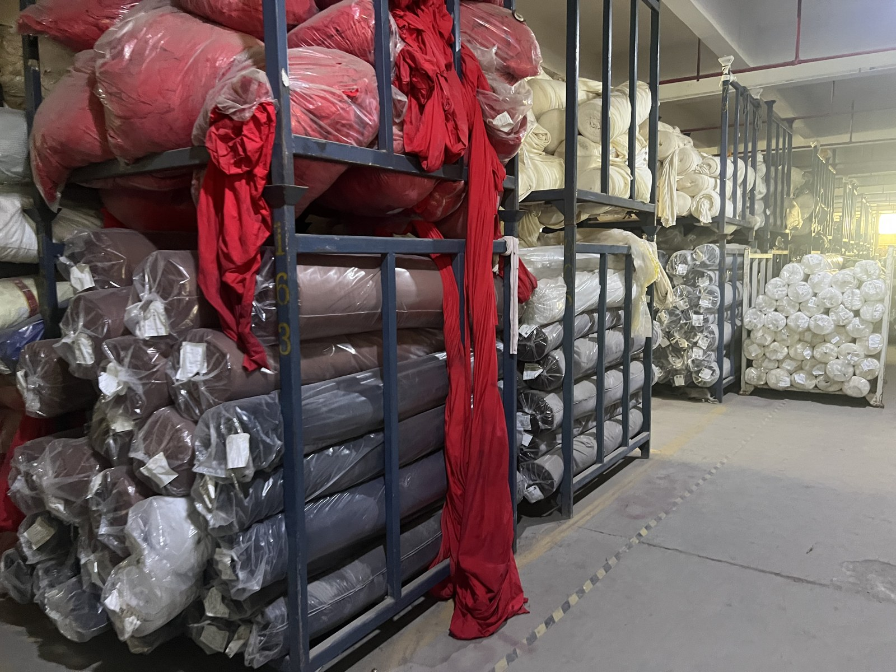

Real factory-visit photograph. It illustrates fabric storage, not a measured width, accepted lot or certified product.
Katherine from Taotao Trading
You are comparing two fabric quotations for an apparel order. Both give a price per metre and a width, but neither explains which part of that width your cutting team can use. Before choosing the lower price, put the width definition into the quotation.
Why this changes the purchasing decision
A roll's edge-to-edge dimension is not automatically the width available to your pattern layout. An attractive price can lose its advantage if the usable area is narrower than the cutting plan assumes. The practical decision is whether the quotations describe the same input for production.
ASTM D3774-18(2024) covers measurement of woven or knitted fabric width, usable width, or both. Naming a method therefore does not remove the need to specify which result you require.
The Association for Contract Textiles' voluntary guidelines, section 1.7, describe usable width as excluding selvedges, pin holes and unfinished areas, and leave acceptable usable width to buyer-seller agreement. Those guidelines concern commercial interiors; their common widths are not universal apparel specifications. The distinction is useful, but your own product and cutting requirements must set the acceptance criteria.
Request a width comparison sheet
This Taotao checklist turns an ambiguous quote into a reviewable specification. Keep the same fields in the supplier quotation, sample request and purchase specification.
| Field | Evidence to request |
|---|---|
| Fabric identity | Article code, construction, finish and proposed production lot. Identify whether the sample represents the quoted material. |
| Width definition | State total width and usable width separately, with units and the agreed treatment of edges and unfinished areas. |
| Delivery condition | Specify the state in which width is accepted: for example, the finished material as supplied. Do not mix an unfinished sample measurement with a finished-fabric promise. |
| Acceptance and method | Agreed minimum or tolerance, method and edition, conditioning and measurement plan confirmed by a competent textile specialist. |
| Traceability | Dated measurement record linked to identified rolls or samples, plus photographs that show what was measured. |
| Cutting check | Confirmation from the cutting team that the proposed usable width works with the intended layout and fabric characteristics. |
Verify before accepting the quote
Ask both suppliers to complete the same fields. Reconcile units and definitions first, then compare commercial terms. A photograph of a tape measure is supporting context; it does not establish how the whole lot was sampled or conditioned.
Have the cutting team review the measured width before issuing cutting approval. If the sample and bulk lot differ, identify the difference and decide what further measurement is needed. Do not calculate garment yield from width alone: pattern layout, direction, repeats, defects and other production factors also matter.
My banking background contributes a simple habit: check whether the evidence supports the decision being made. Here that means reconciling the quote with the production input, using public guidance and supplier-authorized records.
Red flags and limitations
Pause if one document says “width” and another says “cuttable width” without a common definition, if a tolerance appears only after payment, or if the result cannot be linked to the offered fabric. A compliant width result does not establish fiber composition, colorfastness, shrinkage or other performance.
Continue / Pause / Escalate
- Continue: both quotes use the same width basis and delivery condition, and the cutting team accepts the documented specification.
- Pause: units, usable edges, sample identity or bulk-lot evidence remain unresolved.
- Escalate: measurement results conflict or the fabric behaves differently under the intended process; obtain competent textile testing and production advice.
Related product context: apparel sourcing. Specific fabric availability, MOQ, pricing and lead time are available upon confirmation.
Send your redacted fabric specification and the width fields from the competing quotes through our inquiry page for a scoped comparison review. Remove personal contacts and confidential commercial identifiers.
Sources checked November 25, 2026. The comparison sheet is Taotao's practical analysis. The photograph is real factory-visit context, not evidence of a measured width or a particular order.